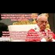

<html>
 <head>
  <title>
   Things that make you go "Hmmm..." Pope Francis Meme
  </title>
  <meta content="Post on /v/Pizzagate archived on 2016-12-08 by Warnos44." name="description"/>
  <meta content='Things that make you go "Hmmm..." Pope Francis Meme' property="og:title"/>
  <meta content="Post on /v/Pizzagate archived on 2016-12-08 by Warnos44." property="og:description"/>
  <link href="../../page.css" rel="stylesheet"/>
  <meta content="https://voat.pizzagate.hackliberty.org/thumbnails/c2/d0/c2d03ba9-b204-4054-9f26-87525a801fc1.jpg" property="og:image"/>
  <meta content="https://voat.pizzagate.hackliberty.org/v/pizzagate/1469735.html" property="og:url"/>
 </head>
</html>
<body class="dark">
 <div id="container">
  <!-- array (
  'submissionid' => 1469735,
  'creationDate' => '2016-12-08 00:35:57',
  'domain' => 'imgur.com',
  'formattedContent' => NULL,
  'isAdult' => 0,
  'isAnonymized' => 0,
  'subverse' => 'pizzagate',
  'thumbnail' => 'c2d03ba9-b204-4054-9f26-87525a801fc1.jpg',
  'title' => 'Things that make you go "Hmmm..." Pope Francis Meme',
  'url' => 'http://imgur.com/a/pQPTl',
  'userName' => 'Warnos44',
  'archivedLink' => NULL,
  'archivedDomain' => NULL,
  'isDeleted' => 0,
) -->
  <div style="text-align:center; font-size:24px; font-weight:bold;">
   Voat /v/Pizzagate Archive
  </div>
  <div class="content" role="main">
   <div class="sitetable linklisting" id="siteTable">
    <div class="submission id-1469735 link type-text" id="submission-1469735">
     <a name="submissionTop">
     </a>
     <p class="parent">
     </p>
     <a class="thumbnail may-blank" href="http://imgur.com/a/pQPTl" target="_self">
      
     </a>
     <div class="entry unvoted">
      <p class="title">
       <a class="title may-blank" href="http://imgur.com/a/pQPTl" tabindex="1" target="_self" title='Things that make you go "Hmmm..." Pope Francis Meme'>
        Things that make you go "Hmmm..." Pope Francis Meme
       </a>
       <span class="domain">
        (
        <a href="https://archive.searchvoat.co/search.php?d=imgur.com">
         imgur.com
        </a>
        )
       </span>
      </p>
      <p class="tagline">
       submitted
       <time datetime="2016-12-08T00:35:57+00:00" title="12/08/2016 12:35:57 AM">2016-12-08T00:35:57</time> by
       <span class="userattrs">
        <a class="author may-blank" href="https://archive.searchvoat.co/search.php?u=Warnos44">
         Warnos44
        </a>
       </span>
      </p>
      <ul class="flat-list buttons">
       <li class="first">
        <a class="comments may-blank" href="https://archive.searchvoat.co/v/pizzagate/1469735" rel="nofollow">
         1 comment
        </a>
       </li>
      </ul>
     </div>
     <div class="child">
     </div>
     <div class="clearleft">
     </div>
    </div>
    <div class="clearleft">
    </div>
   </div>
   <div class="horizontal-line">
   </div>
   <div class="commentarea">
    <div class="sitetable nestedlisting" id="siteTable">
     <div class="child id-7119006 comment even" style="">
      <div class="entry unvoted">
       <div class="noncollapsed" id="7119006" style=";">
        <p class="tagline">
         <a class="author may-blank" href="https://archive.searchvoat.co/search.php?u=HarveyKlinger">
          HarveyKlinger
         </a>
         <span class="userattrs">
         </span>
         <time datetime="2016-12-08T02:59:46+00:00" title="12/8/2016 2:59:46 AM">2016-12-08T02:59:46</time>
        </p>
        <div class="usertext-body may-blank-within" id="commentContent-7119006">
         <div class="md">
          <p>
           <p>
            Except Pope Francis didn't say it.  The vatican and Pope Francis himself say they didn't say it and the author admitted he may have gotten that number from "some other source" since he doesn't record interviews or take many notes.
           </p>
          </p>
         </div>
        </div>
        <ul class="flat-list buttons">
         <li class="first">
          <a class="bylink" href="https://archive.searchvoat.co/v/pizzagate/1469735/7119006" rel="nofollow">
           link
          </a>
         </li>
        </ul>
       </div>
      </div>
     </div>
    </div>
   </div>
  </div>
 </div>
 <div class="footer-container">
 </div>
</body>
